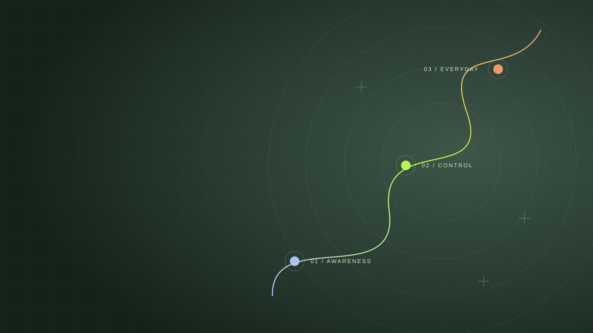

01 / START AGAIN连正常走路，
连正常走路，
都变成了一个目标。
受伤和手术后，伤腿不能正常使用，肌肉萎缩、脚踝僵硬。不敢踩地，也不知道自己做得对不对。
「我根本不知道自己现在做的事情，到底对不对。」
所以我知道，你需要的不只是一个动作，而是知道：现在该保护什么，又可以从哪里开始。
先找到自己的起点脚踝运动复训基础营 · 14天启动陪跑
我是 Dee。从拄拐、穿着支具，到重新训练。
我把这段路上的记录与学习，整理成一条
看得懂、能执行的基础复训路径。
真实经历提供路线感。你的进度，由你的身体决定。

01 / THE STORY BEHIND THE CAMP
反复崴脚，双侧脚踝韧带损伤。
一侧手术重建，一侧保守恢复。
这些照片，是我恢复过程中的真实切片。
受伤和手术后，伤腿不能正常使用，肌肉萎缩、脚踝僵硬。不敢踩地，也不知道自己做得对不对。
「我根本不知道自己现在做的事情，到底对不对。」
所以我知道，你需要的不只是一个动作，而是知道：现在该保护什么，又可以从哪里开始。
先找到自己的起点
从重新活动、逐渐承重，到重新学习走路。我开始记录疼痛、肿胀、训练，以及第二天的状态。
恢复中的记录，
后来成了我的康复笔记。
也正是在这段过程中，我开始系统学习功能解剖、肌动学、运动康复和力量体能训练，让个人体会有知识依据。
感知 · 控制 · 记录 · 调整

从重新承重到重新运动，我把经历、学习和训练记录持续整理，逐渐形成今天的课程内容。
把走过的路整理清楚，
陪你找到自己的下一步。
这张负重训练照片属于我的后续训练阶段，不是基础营的入门要求，也不是给所有人的动作建议。
先重新生活，再评估重新运动02 / FROM NOTES TO A SYSTEM
我的个人康复笔记，是课程的起点。
系统学习、边界意识和持续记录，
让它成为一条可以理解的训练路径。
不敢动、不敢踩，以及“这样做对不对”的不确定。
结合功能解剖、肌动学、运动康复与力量体能知识整理课程。
观察训练前、训练中、训练后和第二天的身体反应。
把认知、练习、观察与调整，放进每日任务和训练卡。
START HERE · 从你现在的困惑开始
网上的动作很多。你真正需要知道的，是自己现在在哪一步，以及下一步先拿回什么能力。
不知道当前的医学限制，也不知道从什么能力开始。
脚踝没那么疼了，走路仍然躲着伤脚，足底感觉陌生。
不知道应该继续、保持，还是减量、退回前面的练习。
这套基础营想交给你的，
是一条看得懂、能执行的基础复训路径。

DEE / 每一步，慢慢建立THE ROADMAP · 10关能力地图
从安全边界、足底感知，到重新承重与基础步态。每一关都让你知道为什么练，以及练完应该看什么。
先了解医学限制、负重要求和当前允许的活动。术后与保守恢复，都需要明确自己的起点。
认识训练前、训练中、训练后约2小时和第二天的身体反应。疼痛数字只是信息之一。
足趾主动活动、触觉感知、大脚趾基础控制，以及足底不同区域的认识。
学习舒适体位与基础轻活动原则。当前允许什么，就做什么，不追求统一角度或时长。
认识勾脚与绷脚，学习基础主动控制和左右差异记录，不追求暴力掰角度。
了解踝背屈与承重、走路、上下楼等生活活动的关系。系统性负重背屈训练属于下一阶段。
了解股四头、臀部和核心基础激活，以及个人医学限制允许范围内的其他区域活动。
从坐姿足底接触与压力转移，到符合条件者的辅助站立与重量转移。医学边界和能力允许后才解锁。
学习三角度步态拍摄与短距离观察，认识明显代偿，逐步建立基础控制。
对比基础生活、足底参与、主动活动、承重与步态，结合连续训练反应完成阶段复盘。
TWO CLOCKS · 两块钟
14天是第一轮基础复训启动陪跑周期，不是14天治好脚踝，也不是统一的恢复期限。
告诉你今天学习什么、观察什么，建立什么认知。
系统学习 → 结构化记录 → Day 14阶段复盘由医学边界、当前能力和身体反应共同决定。
继续 / 保持 / 减量 / 退阶 / 必要时暂停推进到了Day 10还没有承重条件，就不承重。到了Day 12不适合步态练习，就继续巩固前面的能力。
YOUR DAILY ROUTINE · 每日路径
有东西学，有动作练，有反应可记录。每天的任务都区分「已经可以做」和「暂时还不能做」，让不同进度的人各自有路可走。
Day 0先完成使用说明、安全筛查、初始记录和社群规则阅读，建立训练反应表，不安排训练。
理解当天的核心认知与动作方法。
按当前模块与训练卡执行对应练习。
继续前面的基础能力，不跟着日历赶进度。
从训练前到第二天，留下身体反馈。
记录不适、肿胀趋势与当前生活能力。
留意动作感觉、质量与新的异常。
观察不适、肿胀、僵硬与功能变化。
对照训练前，看看身体是否接受了负荷。
WHAT YOU GET · 标准版交付
课程、任务、训练卡、记录和集中反馈，组成一套可执行的基础复训系统。
13条核心认知，18条训练与操作。先知道为什么，再在条件允许时执行。
补充问答按需学习，不用为了赶进度把所有动作做一遍。
每天明确学习、练习、观察与记录内容。训练卡提供起始参数、观察点和调整方式。
实际训练按能力解锁，不统一身体进度。
入营安全筛查、每日训练反应、基础能力、步态观察与Day 14阶段复测。
有初始记录，才有前后对比的依据。
依次覆盖安全与足底感知、脚踝控制与基础激活、承重步态与阶段复测。
具体直播时间以本期开营安排为准。
围绕足趾与足底、符合条件后的承重、短距离步态，集中讲解典型问题。
不承诺每位学员的每段视频都获得1对1点评。
结合基础生活能力与连续训练反应，判断继续巩固、保持、退阶或暂停推进。
符合条件者进入产品2资格评估，不自动进入下一阶段。
A NOTE FROM DEE
我用真实经历提供路线感，用学习和记录整理方法。但我的经历不是你的医学标准答案。你的医学边界、当前能力和身体反应，始终比课程日历更重要。
Dee.脚踝运动复训基础营发起人先确认阶段，再开始训练
申请后先进行入营筛查，确认阶段与服务适配性。符合条件后进入训练营，不适合时建议暂缓或评估其他阶段。
术后用户可以申请，但主刀医生或相关医疗人员明确的负重要求、活动范围、禁忌动作、允许阶段与复查节点始终优先。
基础营之后
基础感知与活动、重新承重、足底参与、短距离步态，以及训练反应的判断。目标是重新建立基础生活能力。
进一步涉及足底与小腿力量、多方向控制、单脚稳定、动态平衡，以及跑步前准备和基础跑跳。
基础营结束不等于自动进入下一阶段。是否进入，取决于当前能力是否达到相应基础门槛。
FAQ · 常见问题
不一定。先完成必要的医学风险排查，再判断是否处于基础营目前能够服务的阶段。
可以申请。医生明确的负重、活动范围和禁忌要求始终优先；课程不会用其他学员的进度替代你的医学边界。
看的是你目前卡在哪个能力阶段，而不只看受伤多久。如果已经能够正常生活，主要问题是力量、单脚稳定、动态控制和跑跳，可能更适合第二阶段。
不能这样理解。14天是第一轮基础复训启动陪跑周期，不是身体恢复期限承诺。
根据当天任务与个人能力调整，不要求所有人统一训练时长。
不能只看疼不疼。需要结合疼痛性质与变化、肿胀、动作质量、训练后及第二天反应，还有走路和生活能力的变化。出现新的损伤或明显异常，应优先进行相应医疗评估。
课程不提供医学影像诊断，也不判断韧带是否愈合。具体结构与影像判断应由相应医疗专业人员完成。
标准版不提供无限私人动作点评，主要通过系统课程、结构化提问、固定直播与代表性作业抽评交付。
根据阶段复测，可能继续巩固当前能力、退回对应模块、进入第二阶段资格评估；如出现异常，则暂停训练推进并优先处理相关问题。
脚踝运动复训基础营
申请 → 入营筛查 → 确认阶段 → 符合条件后入营
不必急着追赶别人的进度。
先知道自己在哪，再一点一点向前。
本期招募状态待确认。申请入口开放后，将先完成筛查与阶段确认。
本产品属于运动训练教育、运动复训、阶段陪跑及Dee个人经验分享。不提供医学诊断、影像诊断、韧带愈合或手术必要性判断、药物建议，不替代主刀医生或其他医疗人员的医嘱。
不承诺固定时间恢复、恢复到受伤前100%、一定重返比赛或以后不再受伤。训练中如出现新的急性损伤、明显异常疼痛、持续严重肿胀、感觉或循环异常、功能突然明显下降等情况，应优先进行相应专业医疗评估。